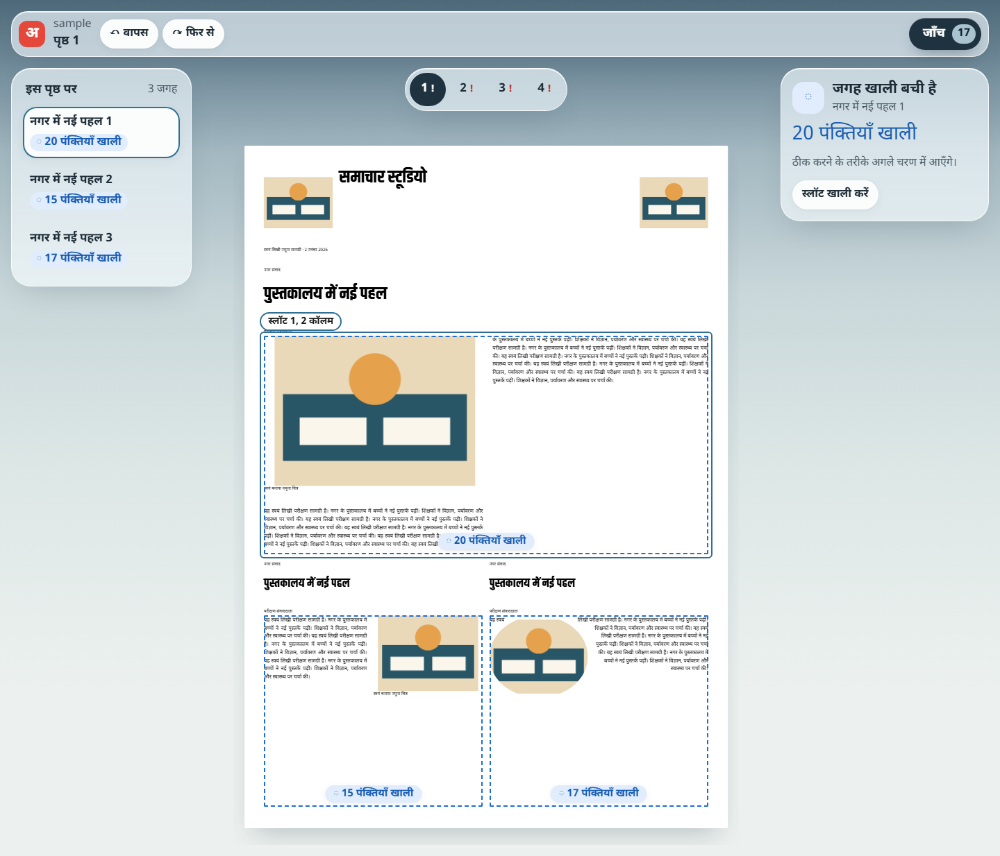
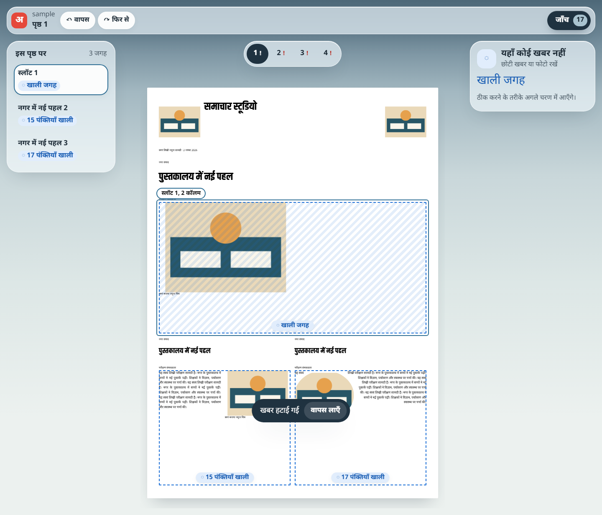

T4: undo and redo (editor slice 4 of 4)
Every change in the editor is an engine op on the engine's own history (run, undo, redo in ops.js). The first change the UI can make is "स्लॉट खाली करें", which takes a story out of a slot. It is undone with the "↶ वापस" button, Ctrl Z, or the toast's "वापस लाएँ" button, which stays for 8 seconds (UX_SPEC F6). It is redone with "↷ फिर से" or Ctrl Y. Every change is said as a sentence in the toast and to screen readers (rule 5).


Checks
| Check | Result |
|---|---|
| UI state unit test (packages/ui) | 8 passed, including describeOp sentences for the toast |
node scripts/smoke-studio.mjs | SMOKE PASS. Undo/redo: slot emptied, toast shown, Ctrl Z restored it exactly, redo emptied it again. 0 console errors, 1 primary button, axe serious/critical 0, no percentages |
Not yet: saving to the local store, with a save status (G20). History lives in memory, so a reload loses changes. An emptied story has no "बिना जगह" list to come back from yet, except undo.